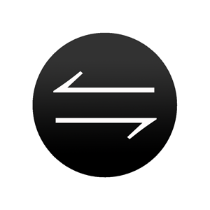
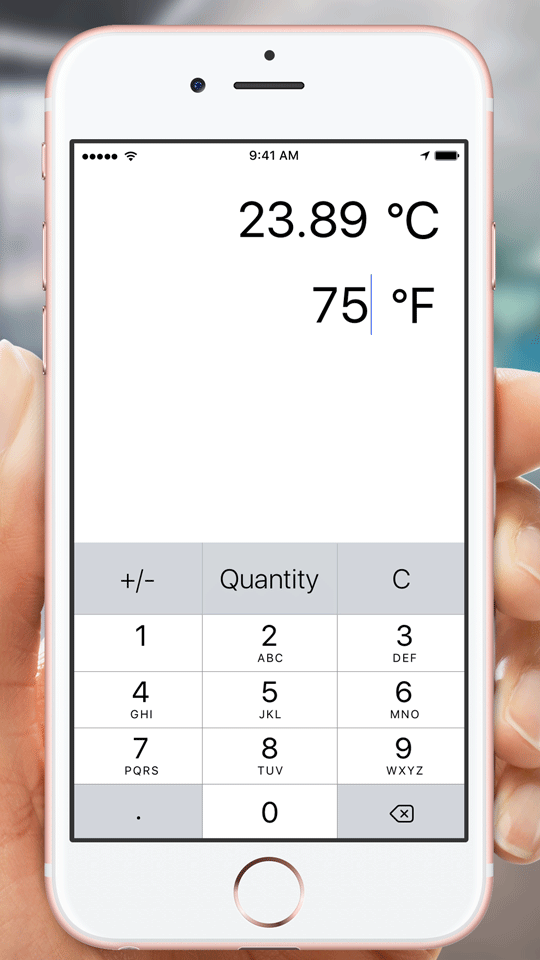
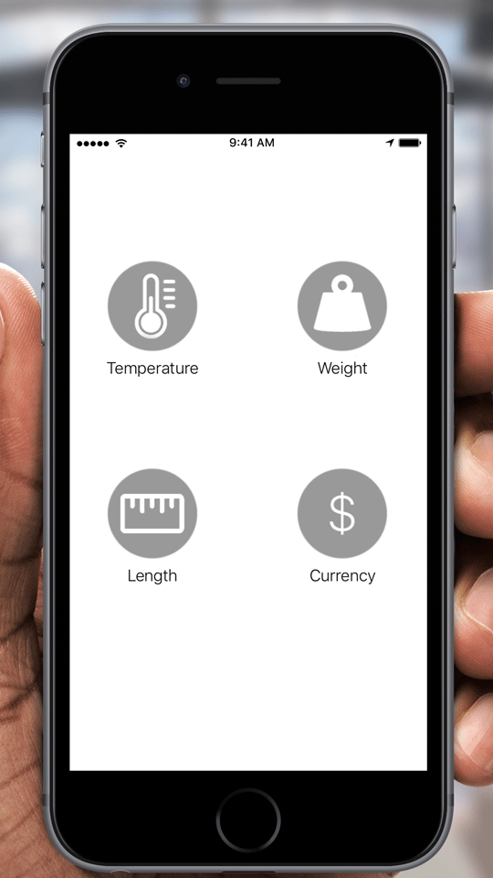
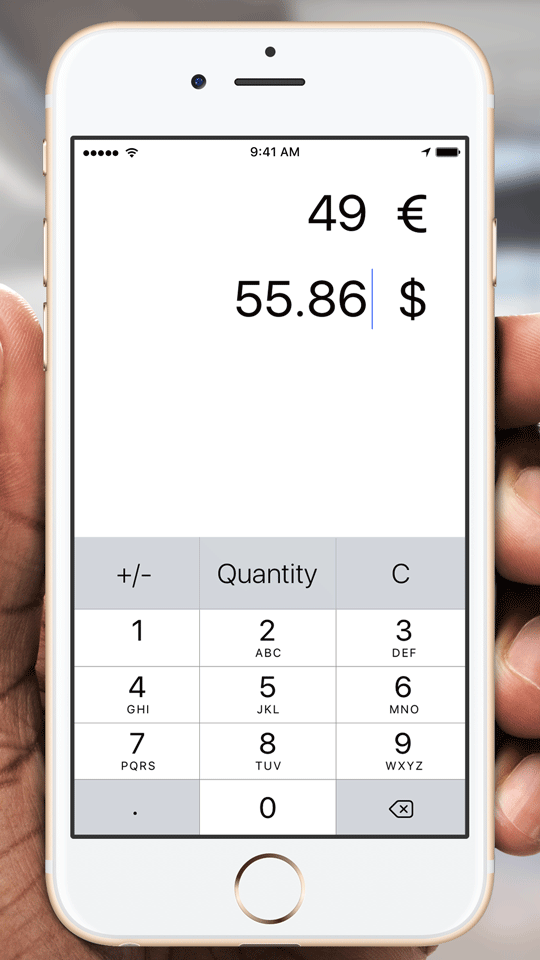

Konverter
The main reason I started this project was the complexety of all the other converters on the App Store. I just wanted a simple unit konverter without having to touch too many buttons to get the results I wanted. Being a native of Germany and living in the US, I always had a need for a unit converter. Especially the everchanging conversion betwenn $ and €.
iPhone


